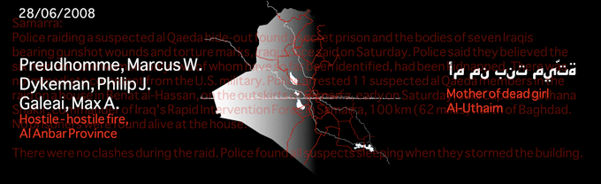
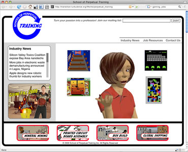
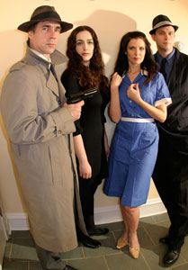

Pace Digital Gallery is pleased to present an exhibition premiering 3 works commissioned by Turbulence, Turbulence@PaceDigitalGallery.
View sound, web, and video works by R. Luke Dubois, Stephanie Rothenberg, and G.H. Hovagimyan with Christina McPhee
Turbulence@PaceDigitalGallery
April 7 - May 1
Opening reception Tuesday, April 7, 5 - 7pm
(Artists' presentations, 5PM; Reception, 5:30PM)
INFO ABOUT THE ARTISTS
 R. Luke DuBois is a composer, performer, video artist, and programmer living in New York City. He holds a doctorate in music composition from Columbia University and teaches interactive sound and video performance at Columbia's Computer Music Center and at the Interactive Telecommunications Program at New York University. He is best known as a co-author of Jitter, a software suite developed by Cycling'74 for real-time manipulation of matrix data. His music is available on Caipirinha/Sire, Cycling'74, and Cantaloupe music.
Dubois' website.
Hard Data is a data-mining, sonification, and visualization project that uses statistics from the American military actions in Afghanistan and Iraq as source material for an interactive audiovisual composition based around an open-source "score" of events. Using Xenakis' understanding of formalized music as a starting point, the composer R. Luke DuBois will use a variety of statistical data ranging from the visceral (civilian deaths, geospatial renderings of military actions) to the mundane (fiscal year budgets for the war) to generate a dataset that can be used for any number of audiovisual compositions. The intention of the project is to recontextualize the formal stochastic music in the context of real-world statistics, and to provide a compositional and metaphoric framework for creating an electroacoustic music relevant and significant to our time.
 Stephanie Rothenberg's interdisciplinary practice merges performance, installation and networked media to create provocative interactions that question the boundaries and social constructs of manufactured desires. She has lectured and exhibited in the US and internationally at venues including the 2008 Sundance Film Festival, 2008 Zer01 San Jose, 2004/2008 ISEA; and the Knitting Factory, NYC. Stephanie received her MFA in 2003 from The Department of Film, Video and New Media at the School of the Art Institute of Chicago. She is currently Assistant Professor of Visual Studies at SUNY Buffalo
Visit Rothenberg's website.
School of Perpetual Training, an ironic edutainment website, exposes the underbelly and not so glamorous side of the computer video game industry. An animated personal trainer leads eager job seekers through a series of webcam game training exercises for outsourced jobs in digital game manufacturing and global distribution. Classic arcade games such as Dig Dug and Space Invaders are redesigned to train job seekers for positions in mineral mining and printed circuit board assembly. Pushing joystick and mouse aside, the webcam interface utilizes motion detection requiring full range of body motion to play. Through the relationship of physical labor for virtual gain, the reality of the actual physical, labor critical to running virtual worlds is made visible.
 G.H. Hovagimyan is an experimental artist working in a variety of forms.
His work ranges from hypertext works to digital performance art, installations and HD video.
Christina McPhee is a media and visual artist whose work reflects on and interprets
generative environments at the edge of the urban. She is based in the central coast of California.
Current exhibitions include "Twice Upon a Time" at Galerie Andreas Huber Vienna and Silvmernan Gallery,
San Francisco. Her new science fiction project "Tesserae of Venus" debuted at Silverman Gallery
San Francisco in fall 2008 and in Belfast for the ISEA festival in August 2008. Her work
has recently shown at Documenta 12, Lyon Biennial 2007, Bucharest Biennial 3, and Bildmuseet Umea, Sweden.
Hovagimyan's website / McPhee's website
Plazaville is a new media video artwork based on the classic 1965 movie Alphaville by Jean Luc Godard. Set in 21st century New York City, the scenes from the original Alphaville are re-enacted, interpreted and improvised upon by the artists, actors and videographers. The piece uses the internet as one means of distributing the short video clips. For Pace Digital the scenes will be projected as a randomly assembled movie.
Turbulence is a project of New Radio and Performing Arts, Inc. (NRPA). Founded in 1996 and now celebrating 13 years of service to artists, Turbulence has commissioned over 160 works and exhibited and promoted networked art through Artists Studios, Guest Curators, Spotlights, Networked_Performance, Networked_Music_Review, Floating Points, Programmable Media, and Upgrade! Boston.
Turbulence@Pace is supported in part by public funds from The New York City Department of Cultural Affairs.